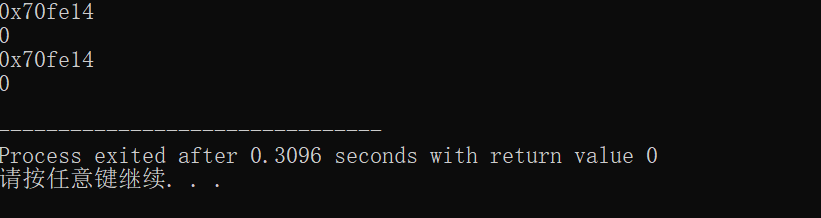
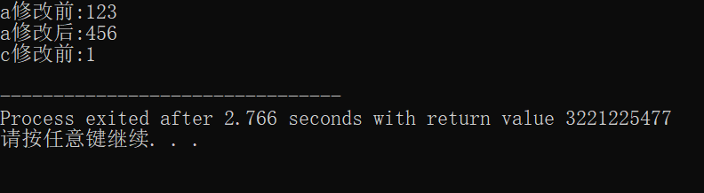
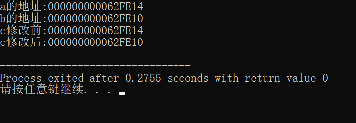

数据结构
单链表
首元结点：是指链表中存储第一个数据元素的结点
头结点：是在首元结点之前附设的一个结点，其指针域指向首元结点，头结点的数据域可以不存储任何信息
头指针：是指向链表中第一个结点的指针，若有头结点，则指向头结点；若没有头结点，则指向首元结点
指针
**&**是取地址
*****是取值
指针间接赋值：
- 两个变量：普通变量、指针变量
- 建立关系 指针变量=&普通变量
- 通过 *运算符赋值 *指针变量=值
1 | int a = 0; |

const修饰的指针变量
修饰普通变量
C语言
在C语言中，const修饰的全局变量保存在常量区，既不能通过变量名去修改，也不能通过地址去修改。
const修饰的局部变量，存在栈区，虽然不能通过const修饰的变量去修改栈区的内容，但是可以通过地址去改变。
1 | #include <stdio.h> |
、
在这里c修改后的并没有输出来，
C++
在C++中，const修饰的全局变量与C语言中的情况是一样的，既不能通过变量名去修改，也不能通过地址去修改。const修饰的局部变量既不能通过变量名修改局部变量的值，也不能通过地址来改变const修饰的局部变量的值。
修饰指针类型
1 | #include <stdio.h> |

1 | #include <stdio.h> |
const 修饰指针类型 可以修改指针变量的值，不可以修改指针指向内存空间的值。
修饰指针变量
1 | #include <stdio.h> |
const 修饰指针变量 可以修改指针指向内存空间的值，不可以修改指针变量的值
1 | int* const c; |
->和.的区别
-> 用于访问指针指向的结构体成员，而 . 用于直接访问结构体的成员。
->（箭头操作符）：- 用于访问结构体或联合体的成员，通过指向结构体或联合体的指针。
- 通常用于指针变量，例如
ptr->member表示访问指针ptr指向的结构体或联合体的成员。 - 比如，
ptr->member等同于(*ptr).member。
.（点操作符）：- 用于访问结构体或联合体的成员，通过结构体或联合体的实例。
- 通常用于直接访问结构体或联合体的成员，例如
structInstance.member表示访问结构体structInstance的成员。 - 只能用于结构体或联合体的实例，不能用于指针。
1 | #include <stdio.h> |
本博客所有文章除特别声明外，均采用 CC BY-NC-SA 4.0 许可协议。转载请注明来自 子非鱼！
评论